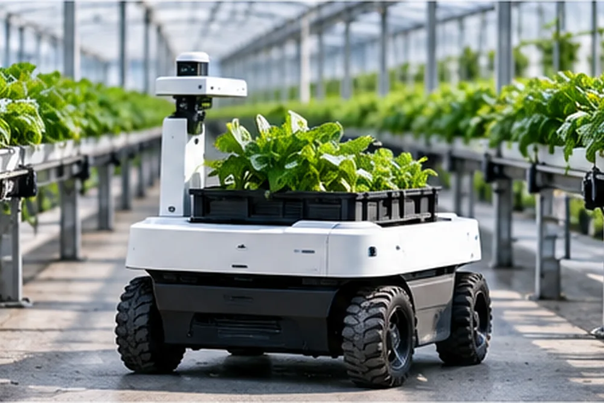
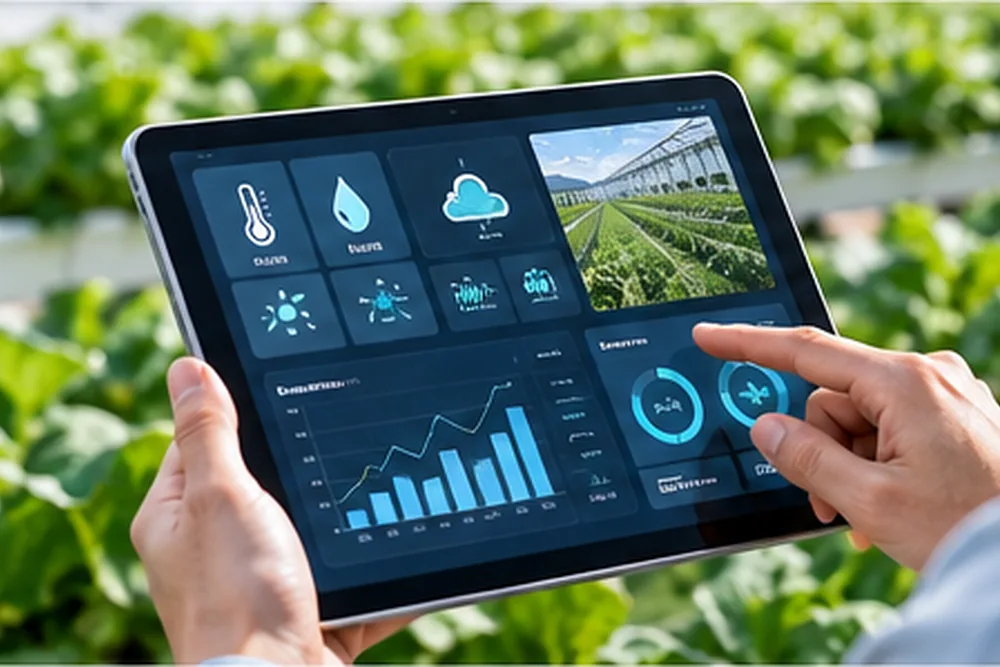
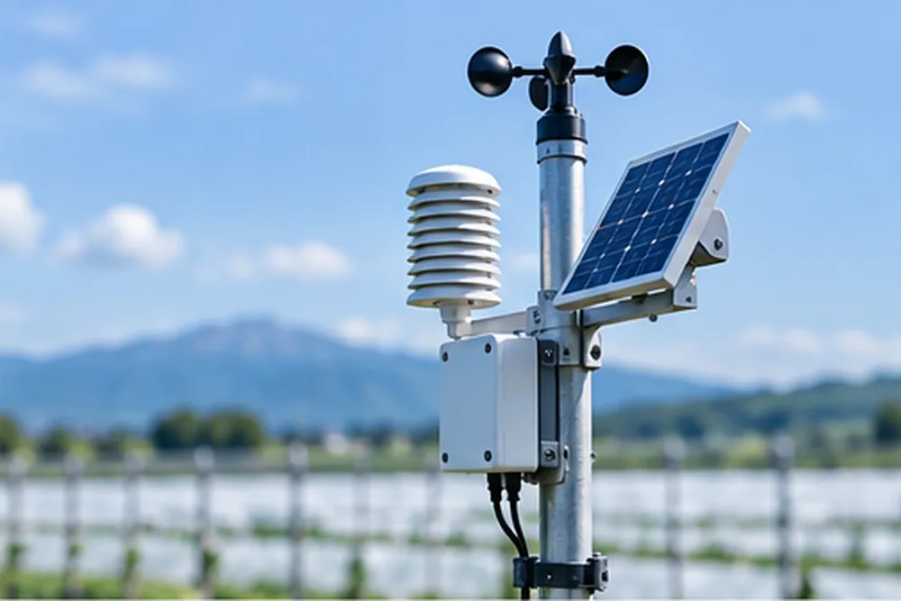
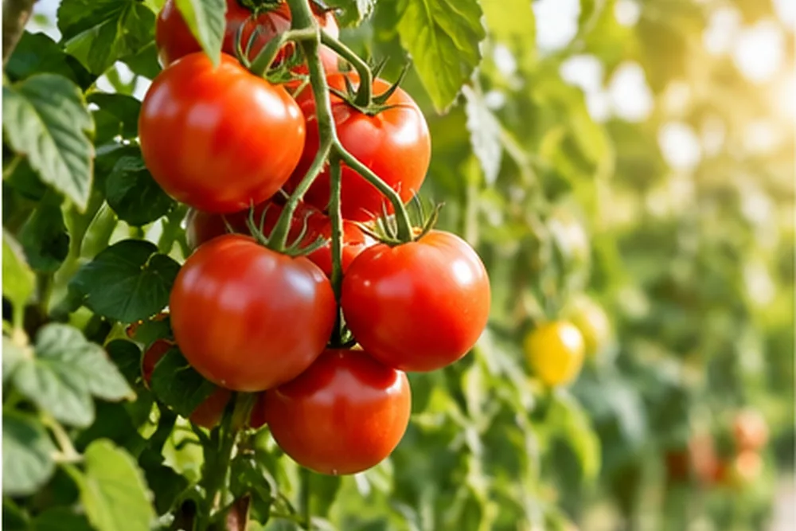

AI스마트팜
지역 농산물을 고부가가치 건강식품으로 전환하여 지역경제를 활성화하는 AI 순환형 식품산업 플랫폼을 소개합니다.
니가타현 AI 기반 MICRO FOOD FACTORY 운영 전체 구성
지역 농산물을 고부가가치 건강식품으로 전환하여 지역경제를 활성화하는 AI 순환형 식품산업 플랫폼
사업 비전
니가타의 자연을 담아 건강한 가치를 만드는 글로벌 식품 허브
01
지역 자원Local Resource
농산물 자원
- 쌀(고시히카리)
- 에다마메
- 과일(배, 사과, 감 등)
- 채소
- 고구마
산림·버섯 자원
- 느타리버섯
- 표고버섯
- 송이버섯 등
기타 천연물 자원
- 산나물
- 허브
- 녹차
- 약초
- 해조류 등
02
니가타현 MICRO FOOD FACTORY 네트워크
A
니가타시 거점
쌀·채소 가공 특화
- 쌀가공, 발효식품
- 전통물·젤리
- 채소 분말·소스
B
나가오카 거점
과일·채소 가공 특화
- 농축
- 펙틴화
- 건강음료
- 젤리
C
도카마치 거점
발효·천연물 가공 특화
- 산나물·허브 추출
- 지역 전통식품
D
우오누마 거점
쌀·버섯·발효 특화
- 쌀 발효
- 효소식품
- 버섯 액상/농축
- 기능성 소재
E
사도 거점
해양·농산물 복합 가공
- 해조류 가공
- 농산물 가공
- 건강식품 원료

모든 공장을 AI 플랫폼으로 연결
공통 연결
- 생산데이터 통합
- 판매데이터 연계
- 수요 예측
- 공동 연구
03
AI 기반 생산·가공 프로세스
- Module A 전처리 세척·선별·절단·분쇄 등 원료 1차 처리
- Module B 기본 가공 건조·분말·볶음·농축·페이스트·소스
- Module C 고도 가공 동결건조·효소처리·추출·액상·미세분말
- Module D 바이오 가공 버섯 액상배양·발효·기능성 소재 생산
- Module E 포장·출하 충진·포장·라벨링·QR 추적 및 출하
04
AI 플랫폼NIIGATA FOOD CLOUD
NIIGATA
FOOD CLOUD
FOOD CLOUD
AI 제품 기획
시장 트렌드, 소비자 수요, 원료 특성을 분석하여 제품을 기획합니다.
AI 레시피 최적화
배합과 가공 조건을 최적화합니다.
AI 품질 관리
가공량, 성분, 품질 데이터를 분석합니다.
AI 수요 예측
판매 예약과 유통 데이터를 기반으로 수요를 예측합니다.
AI 통합 관리
생산·재고·판매·물류를 통합 대시보드로 관리합니다.


05
제품 유통 및 판매 채널
지역 판매
- 전통시장
- 네이처숍
- 관광지
관광 연계
- 스키장
- 온천
- 체험 프로그램
온라인
- 자체 라이브커머스
- 구독 서비스
B2B
- 식품회사
- 호텔
- 레스토랑
- 급식
수출
- 한국
- 대만
- 동남아
- 미국
- 유럽
06
공동 브랜드NIIGATA NATURAL WELLNESS
NIIGATA
NATURAL
WELLNESS
자연의 힘을 담아, 건강을 나누다.
제품 예시
- 분말 제품
- 건강음료
- 농축액
- 버섯 기능성 제품
- 허브/천연물 제품
QR 스캔 제공 정보
- 생산지
- 농가
- 제조과정
- 성분
- 스토리
- 관광지 연결

07
관광·체험·교육 프로그램 연계
가공 체험
농산물 가공 체험, 발효 체험
공장 견학
MICRO FACTORY 견학 투어
지역 요리 체험
지역 재료로 요리 체험
스키 & 온천 연계
스키, 온천, 미식 패키지
농가 교류
농가 방문, 수확 체험, 로컬 교류
08
지역경제 활성화 효과
- 농가 소득 증가
- 지역 일자리 창출
- 청년 창업 활성화
- 지역기업 성장
- 브랜드 가치 상승
- 관계 인구 증가
핵심 메시지
지역이 키우고, 지역이 가공하고, 지역이 함께 성장하는 지속 가능한 구조
09
운영 모델
- 지자체
- 운영 법인
- MICRO FACTORY 운영
- 수익 창출
- 지역 재투자
운영 참여
- 지자체 지원
- 농협/관련 사업자
- 민간 투자
- 클라우드 펀딩
- 참가 출자
10
확장 전략
니가타현 전역 확대
거점 확장 및 공장 추가 설치
해외시장 진출
한국, 대만, 동남아, 미국, 유럽 등
글로벌 파트너십 구축
기술 협력, 유통 파트너, OEM/ODM
11
핵심 가치
- AI & 데이터 기반 혁신
- 지역 자원의 최대 활용
- 건강과 웰니스 지향
- 환경 친화적 생산
- 지속 가능한 미래 창출